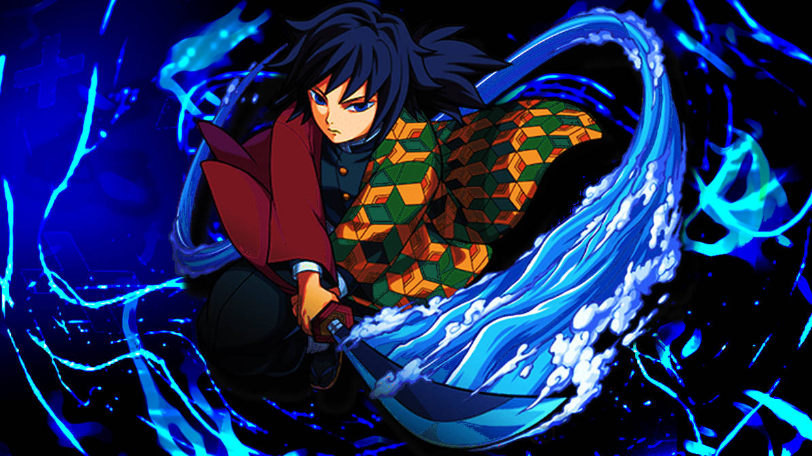
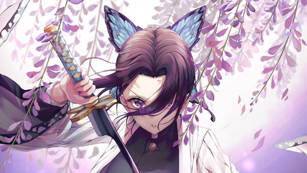
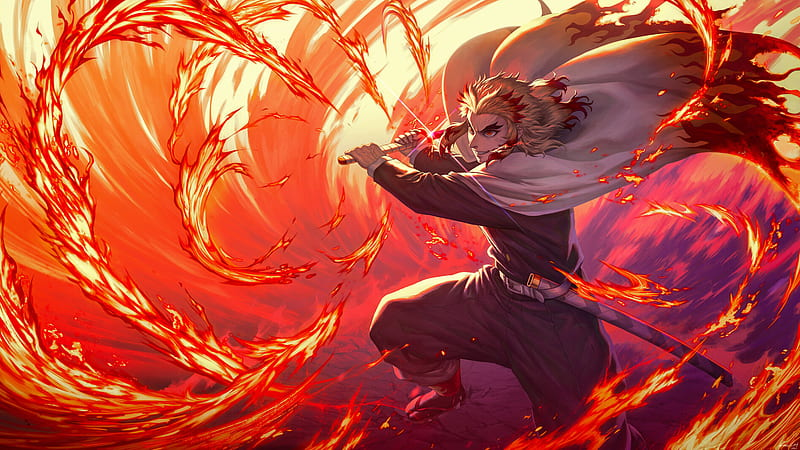
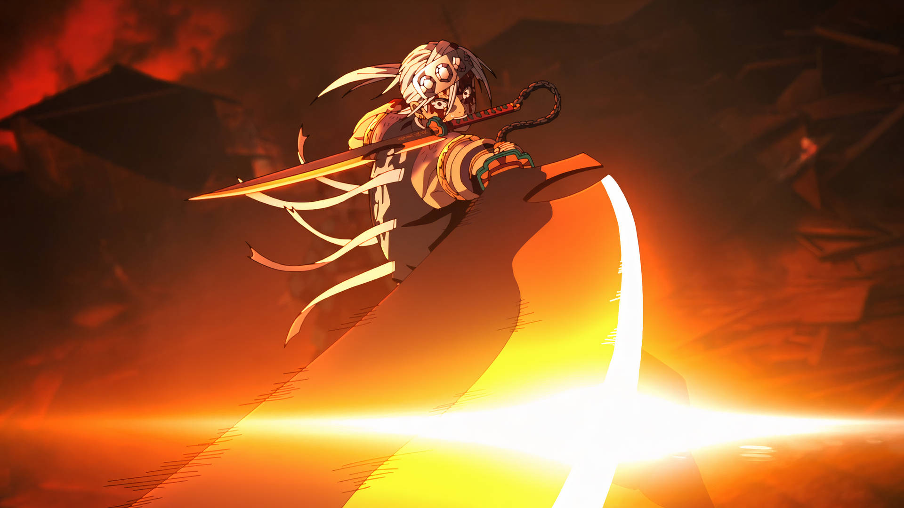
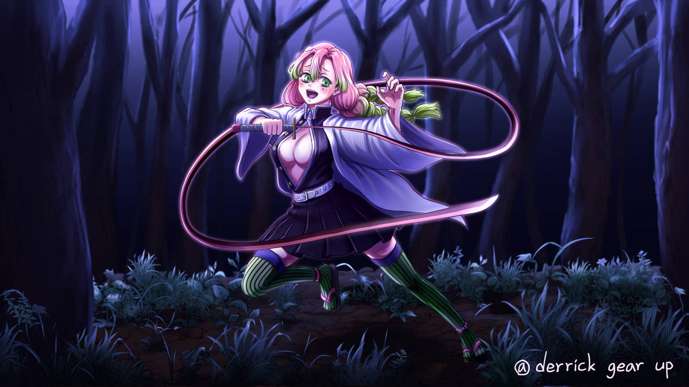
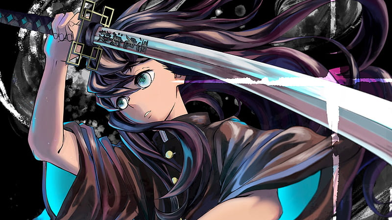

Hashiras
Os Hashiras, ou Pilares, são a elite dos caçadores de onis na série "Kimetsu no Yaiba" (Demon Slayer). Eles representam os
guerreiros mais fortes, habilidosos e experientes dentro do Demon Slayer Corps, a organização dedicada a combater e erradicar os
demônios. Cada Hashira é um mestre em uma técnica de respiração específica, que concede a eles habilidades sobre-humanas em combate.
Seu papel é crucial na luta contra os demônios, especialmente os mais poderosos, que muitas vezes requerem as habilidades
dos Hashiras para serem derrotados. Possuem, também, diversas responsabilidades importantes dentro do Demon Slayer Corps: combate
de alto nível, treinamento e mentoria de novos matadores de demônios, e participação nas principais decisões estratégicas para
enfrentar ameaças demoníacas.
Giyu Tomioka

Giyu Tomioka é o Pilar da Água e o primeiro Hashira a ser introduzido na série. Ele é um espadachim habilidoso, utilizando a
técnica de Respiração da Água. Giyu é conhecido por sua natureza reservada e calma. Ele desempenha um papel crucial no início
da série ao poupar Nezuko Kamado e orientar Tanjiro Kamado para se juntar ao Demon Slayer Corps. Sua técnica mais notável é o
"Onze Formas: Calmaria".
Idade: 21
Altura: 176cm
Técnica: Respiração da Água
Personalidade: Reservado e calmo
Shinobu Kocho

Shinobu Kocho é a Pilar dos Insetos, conhecida por sua inteligência e natureza jovial. Ao contrário dos outros Hashiras,
ela não possui força física suficiente para decapitar onis, então ela desenvolve uma técnica única de Respiração dos Insetos,
utilizando venenos para matar seus inimigos. Shinobu também é uma habilidosa médica e cuida dos outros matadores de demônios.
Sua técnica principal é o "Dança da Borboleta: Capricho".
Idade: 18
Altura: 151cm
Técnica: Respiração do Inseto
Personalidade: Jovial e inteligente
Kyojuro Rengoku

Kyojuro Rengoku é o Pilar das Chamas, conhecido por sua personalidade exuberante e paixão pela justiça. Ele usa a técnica de
Respiração das Chamas, executando ataques poderosos e devastadores. Kyojuro é um personagem carismático que inspira todos ao
seu redor. Seu papel é destacado no arco do Trem Infinito, onde ele luta bravamente contra o demônio Akaza. Sua técnica principal
é o "Purgatório: Rengoku".
Idade: 20
Altura: 177cm
Técnica: Respiração das Chamas
Personalidade: Exuberante e apaixonado pela justiça
Tengen Uzui

Tengen Uzui é o Pilar do Som, um ex-ninja com uma personalidade extravagante e um gosto por tudo que é chamativo. Ele utiliza a
técnica de Respiração do Som, que lhe permite criar padrões de som explosivos para confundir e destruir seus inimigos. Tengen é
um personagem carismático e valoriza a vida de seus subordinados. Sua técnica mais notável é o "Quinta Forma: Toque Estrondoso".
Idade: 23
Altura: 198cm
Técnica: Respiração do Som
Personalidade: Extravagante e carismático
Mitsuri Kanroji

Mitsuri Kanroji é a Pilar do Amor, uma jovem incrivelmente forte e flexível. Ela utiliza a técnica de Respiração do Amor, que
é uma variação da Respiração das Chamas. Mitsuri é conhecida por sua natureza doce e carinhosa, mas é feroz em batalha. Suas
técnicas são baseadas em movimentos graciosos e poderosos.
Idade: 19
Altura: 167cm
Técnica: Respiração do Amor
Personalidade: Doce e carinhosa, mas feroz em batalha
Muichiro Tokito

Muichiro Tokito é o Pilar da Névoa, um jovem prodígio com uma memória confusa devido a um trauma passado. Ele utiliza a técnica
de Respiração da Névoa, criando ilusões e ataques rápidos e imprevisíveis. Muichiro é inicialmente distante e distraído, mas é
extremamente habilidoso e determinado quando em combate. Sua técnica principal é o "Sétima forma: Neblina, criada por ele mesmo.
Idade: 14
Altura: 160cm
Técnica: Respiração da Névoa
Personalidade: Distrativo e distante devido a um trauma passado
Obanai Iguro
Obanai Iguro é o Pilar da Serpente, um guerreiro enigmático e reservado. Ele utiliza a técnica de Respiração da Serpente,
caracterizada por movimentos sinuosos e ataques precisos. Obanai tem um senso de dever rígido e é profundamente leal ao
Demon Slayer Corps. Ele é frequentemente visto com sua serpente de estimação, Kaburamaru.
Idade: 21
Altura: 162cm
Técnica: Respiração da Serpente
Personalidade: Reservado e enigmático
Sanemi Shinazugawa
Sanemi Shinazugawa é o Pilar do Vento, conhecido por sua personalidade agressiva e impetuosa. Ele utiliza a técnica de
Respiração do Vento, que lhe permite criar ataques rápidos e cortantes. Sanemi tem um passado traumático que moldou sua
desconfiança e raiva, mas é um guerreiro extremamente poderoso e leal.
Idade: 21
Altura: 179cm
Técnica: Respiração do Vento
Personalidade: Agressivo e impetuoso
Gyomei Himejima

Gyomei Himejima é o Pilar da Pedra, o mais forte entre os Hashiras. Ele utiliza a técnica de Respiração da Pedra,
combinada com seu rosário e uma enorme arma em forma de machado e bola de espinhos. Gyomei é cego, mas compensa essa deficiência
com seus outros sentidos aguçados. Ele é um homem profundamente espiritual e compassivo.
Idade: 27
Altura: 220cm
Técnica: Respiração da Pedra
Personalidade: Espiritual e compassivo
Função e Importância
Os Hashiras têm várias responsabilidades importantes dentro do Demon Slayer Corps:
1. Combate de Alto Nível: Eles são responsáveis por enfrentar os demônios mais poderosos, incluindo os membros das Doze
Luas Demoníacas(Doze Kizukis), que são os tenentes do principal antagonista, Muzan Kibutsuji.
2. Treinamento e Mentoria: Os Hashiras treinam e orientam novos matadores de demônios, ajudando-os a desenvolver suas habilidades e
a sobreviver nas batalhas contra os demônios.
3. Liderança e Decisões Estratégicas: Eles participam das principais decisões estratégicas e são essenciais na formulação de planos
para enfrentar ameaças demoníacas.